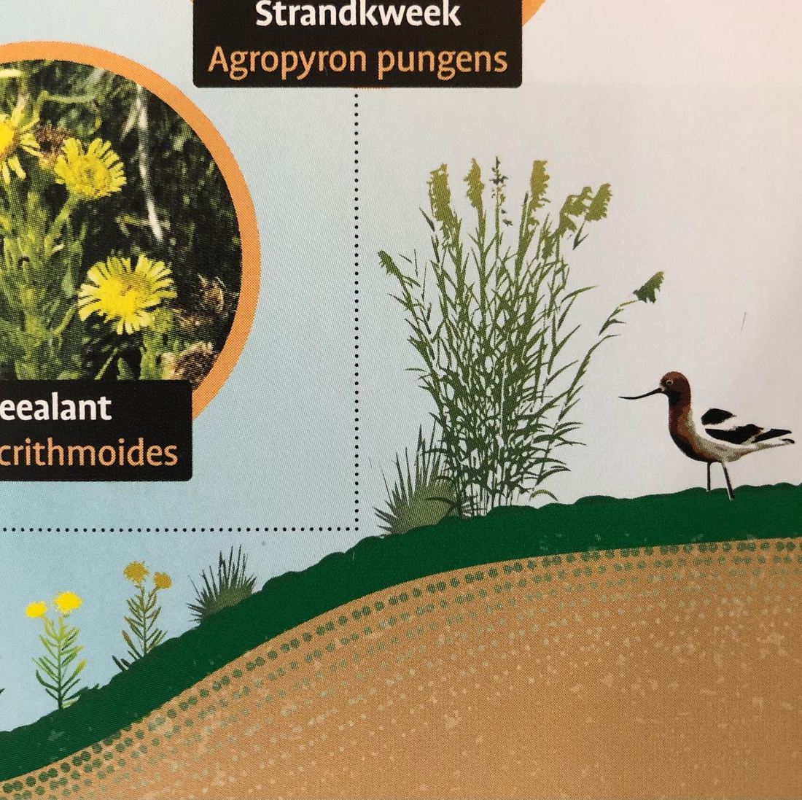
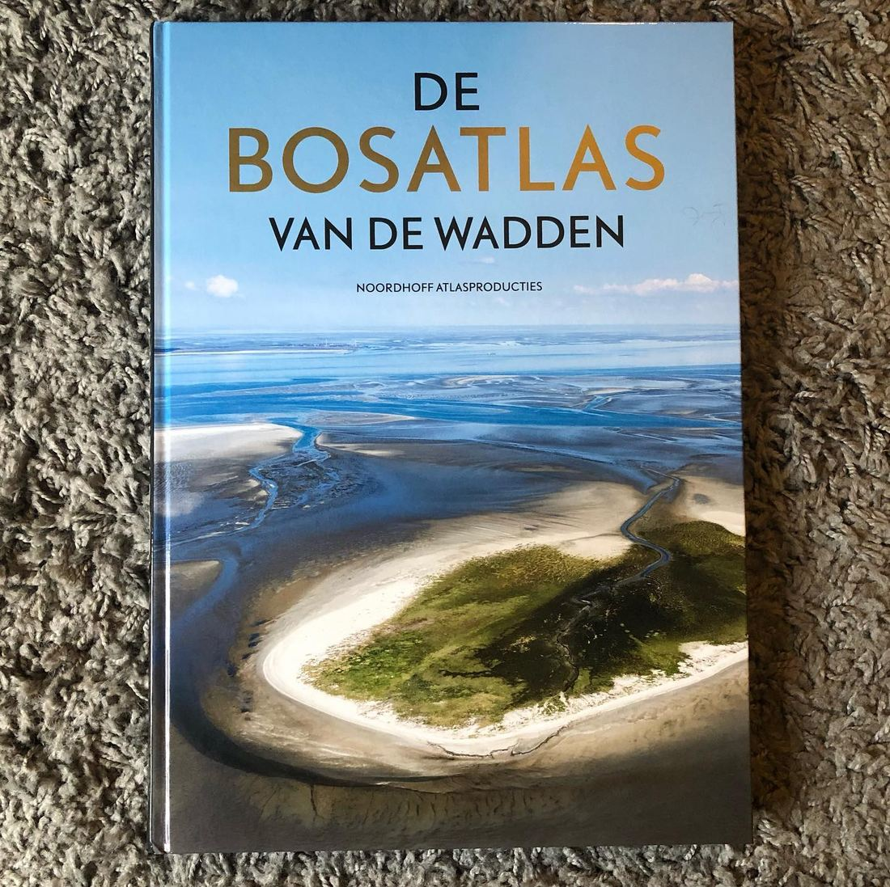

Amerikaanse kluut in de Bosatlas van de Wadden
12 november 2020 · Bosatlas van de Wadden
- Op de foto
- Amerikaanse kluut
- Het ging over
- Kluut


De Bosatlas van de Wadden. Een parel van een boek. Wel jammer van die Amerikaanse kluut, dat dan weer wel.